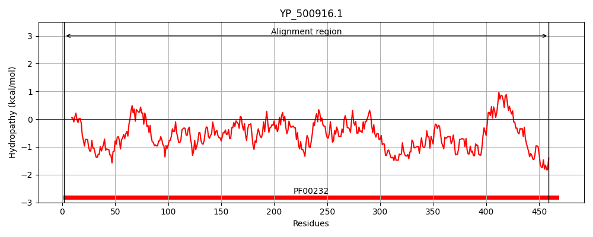
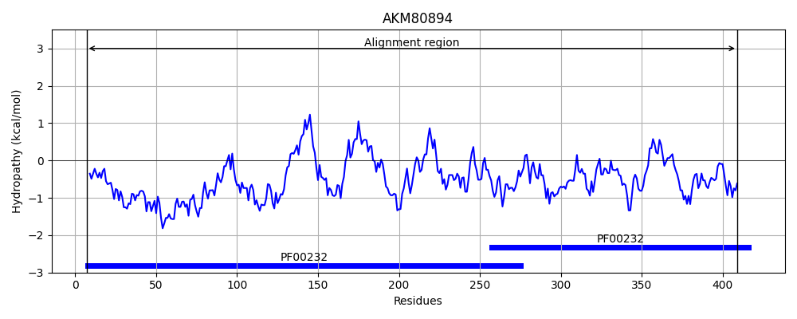
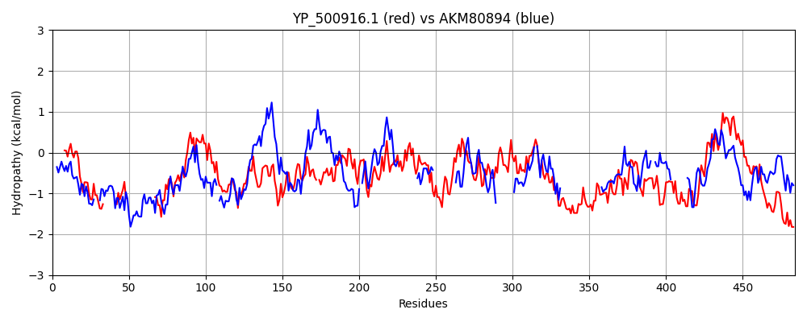

Hit Accession: AKM80894
Hit TCID: 8.A.49.1.3
Hit Description: gnl|BL_ORD_ID|1291 gnl|TC-DB|AKM80894|8.A.49.1.3 putative beta-glucosidase [Candidatus Saccharibacteria bacterium GW2011_GWC2_44_17]
Mach Len: 484
e:0.000000
Query TMS Count : 0
Hit TMS Count: 0
TMS-Overlap Score: 0.000000
Predicted Substrates:None
BLAST Alignment:
Score: 380 , Bit scores: 150 bits, E-value: 6.6e-41, Alignment length: 484, Percentage identity: 27
Query: 2 TKTLPEDFIFGGATAAYQAEGATNTDGKGRVAWD--------TYLEENY-----W------------YTAEPASDFYNRYPVDLELSEKFGVNGIRISIAWSRIFPNGYGEVNPKGVEYYHKLFAECHKRHVEPFVTLHHFDTPEVLHKDGDFLNRKTIDYFVDYAEYCFKEF-PEVKYWTTFNEIGPIGDGQYLVGKFPPGIKYDFEKVFQSHHNMMVAHARAVKLFKDGGYKGEIGVVHALPTKYPFDPSNPEDVRAAELEDIIHNKFILDATYLGKYSRETMEGVQHILSVNGGKLNITDEDYAILDAAKDLNDFLGINYYMSDWMRGYDGESEITHNATGDKGGSKYQLKGVGQREFDVDVPRTDWDWMIYPQGLYDQIMRVVKDYPNYHKIYITENGLGYKDEFIESEKTVHDDARIDYVRQHLNVIADAIIDGANVKGYFIWSLMDVFSWSNGYEKRYGLFYVDFETQERYPKKSAYW 459
+K P+ F++G +TAA+Q EG + W+ T E +Y W Y + ASD Y +Y D ++ K +N R S+ WSRI P G N + +E+Y +R +EP VTL HF P + G F +K I YF +AE E V+Y T NE YL G +PP ++ + + +N+ +AH +A K V+H L +Y + N A SR+T + +Q+ +DY + AK DFLG+NYY S+ + GY R + D+ +D W + P + + R+ Y I ITENGL D+ R ++ + + A+ G ++GY WSL+D F W G R+GL VD+ TQ+R + SA W
Sbjct: 7 SKPFPKKFLWGASTAAHQVEGGNHNQWS---VWELENAKSLATQSEYHYHDLESWSRIKKEATSPQNYISGDASDHYVQYEKDFDILTKLNMNAFRFSVEWSRIEPQE-GAWNAEAIEHYKHYVQALKQREIEPIVTLFHFTLPVWFSELGGFEKKKNIHYFTRFAEKIISELGVSVRYIITINEPEVYAHESYLAGNWPP-MRQSKKTMITVLNNLAIAHKQAAK------------VIHTLNRRYKV--------------SVAKNSCYFYAGDDALLSRKTADIMQY-----------GQDDYFLKKVAKHC-DFLGVNYYFSNRVYGY--------------------------RVHNPDIDMSDLGWDLSPANIQQVLERLHDKYE--LPIIITENGLA----------DATDEHRKWWLTHTIIAMQRAMAYGVKLEGYLHWSLLDNFEWDKGKWPRFGLIAVDYATQKRSARPSAIW 409 | Protein Hydropathy Plots: |
|---|
|  |  |
Pairwise Alignment-Hydropathy Plot:
|
|---|
|  |